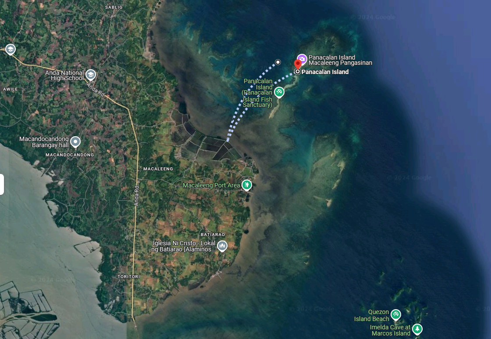
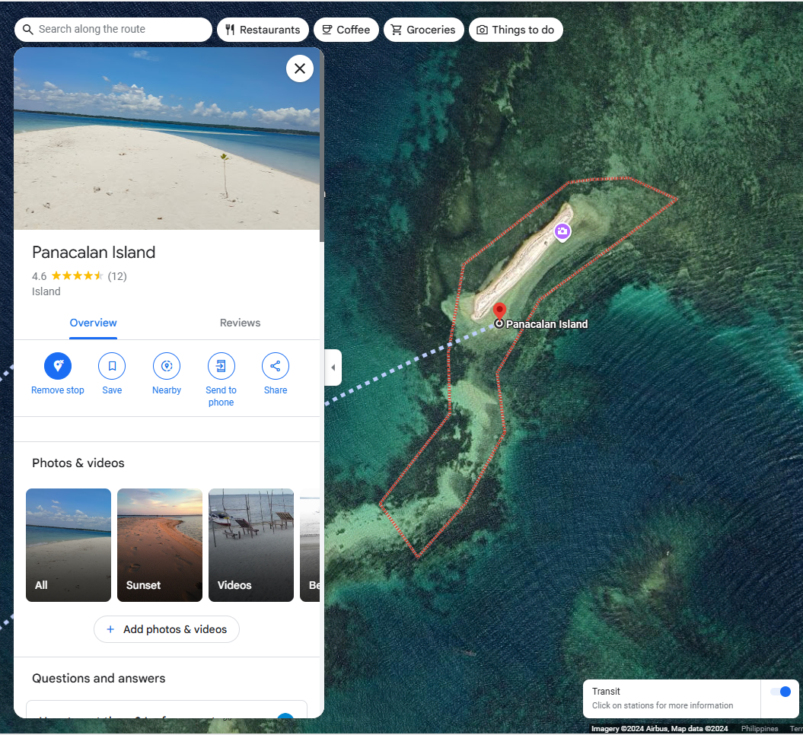

Destination
Panacalan Island, a secluded sandbar in the center of Pangasinan, provides a peaceful retreat surrounded by crystal-clear waters and diverse marine life. As shown on the map, Panacalan Island is only a short boat trip from the Macaleeng Port Area, making it easily accessible while also seeming like a private haven. The island is not only a beautiful place to rest, but it also houses a fish sanctuary, which allows tourists to snorkel and explore underwater. This site is ideal for nature lovers seeking to immerse themselves in Pangasinan's natural beauty, with local attractions such as Quezon Island Beach and the Imelda Cave on Marcos Island adding to the adventure. A visit to Panacalan Island promises stunning views, a tranquil atmosphere, and a taste of Pangasinan's natural beauty.
 Panacalan Island, with its gorgeous white sands and brilliant turquoise waters, is a great destination for those seeking peace and solitude in Pangasinan. Visitors have rated the island 4.6 stars for its scenic sandbar and breathtaking views, making it ideal for a relaxing beach day or an active island-hopping trip. The overhead map emphasizes the island's distinctive shape and remote location, with only a limited link to the nearby reefs. Visitors frequently laud the stunning sunsets and the opportunity to observe abundant marine life up close, making Panacalan Island a must-see for both beachgoers and wildlife aficionados.